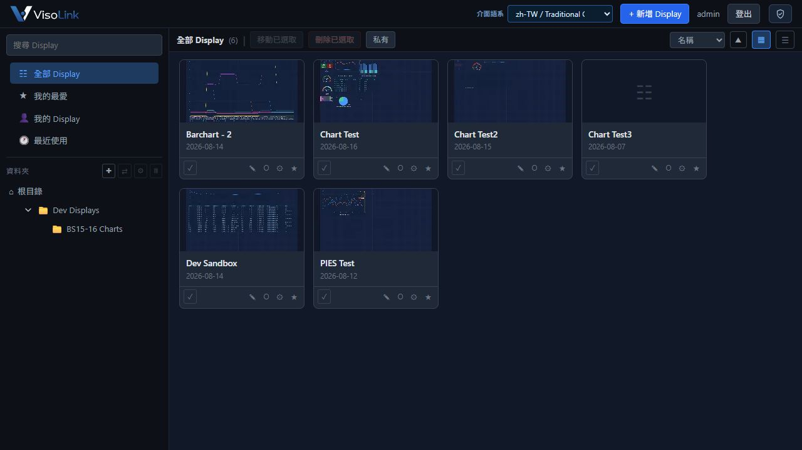
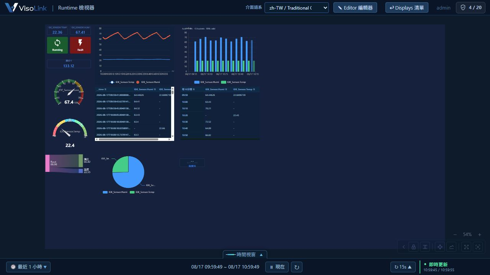
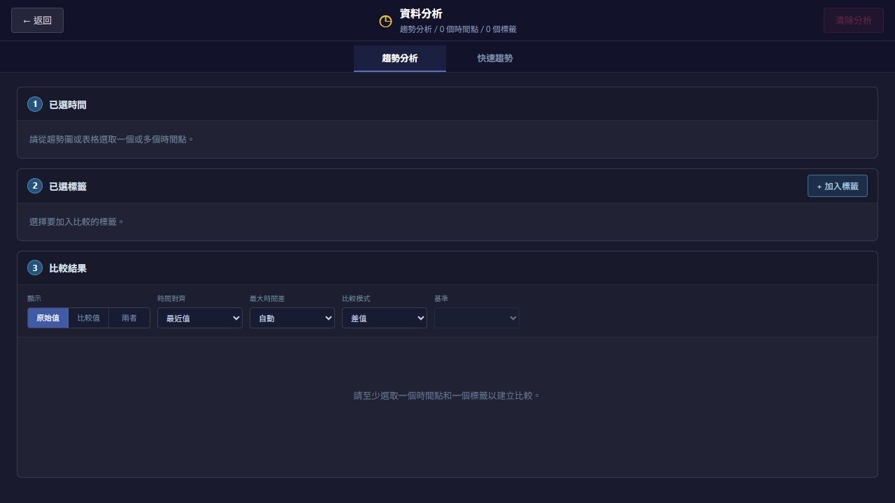
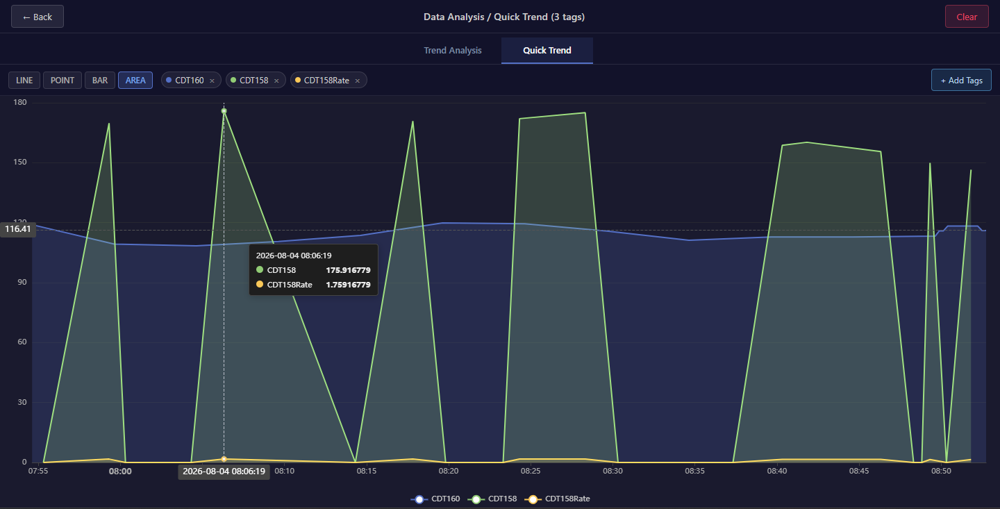

COURSE 01 · OPERATION
Runtime Operation
從開啟正確 Display，到在相同時間情境中完成分析與回報。
一般監看人員必修設計／管理人員理解建議 60 分鐘
LEARNING OUTCOMES
完成後，你應能獨立完成一次監看循環
01找到畫面
使用分類、資料夾、搜尋與最近使用找到 Display。
02確認情境
確認資料狀態、即時／歷史模式與時間範圍。
03完成分析
使用 Quick Trend 與 Time Marker 比較資料。
04正確回報
保留足以讓他人重現問題的資訊。
STEP 1 · FIND
從 Display 清單進入正確工作情境

Display 清單：分類、資料夾、搜尋、最愛與最近使用。- 確認登入身分右上角帳號會影響可見範圍。
- 縮小範圍優先使用工作資料夾或分類。
- 辨識 Display確認名稱、縮圖及修改時間。
- 進入 Runtime不要誤入 Editor 進行編輯。
講師示範：使用「全部 Display」「我的最愛」「最近使用」找到同一張畫面。
STEP 2 · ORIENT
先辨識四個操作區，再開始判讀

Runtime 主畫面會依 Display、視窗尺寸及使用權限呈現。- Display 畫布狀態、數值、圖表與表格。
- 畫布工具列縮放、移動畫布、顯示模式與分析。
- 全域時間列時間範圍、現在狀態與更新頻率。
- 系統狀態更新完成時間及授權使用狀況。
DATA STATE
沒有數字，不等於設備數值是零
載入中
畫面正在取得資料，等待完成後再判讀。
無資料
指定時間沒有可用記錄，需檢查時間與來源。
無權限
能進入 Display，但沒有該資料的讀取權限。
錯誤
取得或轉換失敗，記錄訊息與影響元件。
判讀原則：不要把「—」「無資料」或載入失敗口頭回報成 0；它們代表完全不同的營運意義。
VIEW MODES
依設備與任務選擇顯示方式
固定畫布
維持設計尺寸，以捲動與移動畫布查看；適合精確位置與大型製程圖。
符合螢幕
縮放整張 Display 至視窗範圍；適合快速掌握全貌。
Full Mode
隱藏上、下操作列，最大化監看空間；適合中控大屏。
切換顯示模式只改變觀看方式，不會改變 Display 的資料與時間條件。
GLOBAL TIME
整張 Display 必須在同一時間情境下解讀
1看目前模式現在或歷史
2選快速區間例如最近 1 小時
3必要時自訂指定起訖時間
4等待同步元件重新取得資料
5確認完成查看更新狀態
常見錯誤：完成歷史追查後未切回「現在」，下一班人員把歷史畫面誤認為即時狀態。
ANALYSIS ENTRY
在 Runtime 情境中直接進入資料分析

Data Analysis 依「選時間、選標籤、看結果」組織操作。- 已選時間顯示從圖表或表格建立的時間標記。
- 已選標籤加入要比較的 Tag。
- 比較結果選擇顯示、時間對齊與比較模式。
- 模式切換趨勢分析或快速趨勢。
QUICK TREND
快速查看一段時間內的資料變化
Quick Trend 整合過去的 Popup Trend 能力，適合快速確認上升、下降、週期與多序列關係。
- 選擇一個或多個 Tag
- 確認使用中的全域時間範圍
- 辨識圖例、單位與資料尺度
- 需要時使用全畫面持續監看

多序列比較前，先確認單位與尺度是否可直接對照。TIME MARKER
時間標記是可以保留與整理的分析物件
 以多個時間點比較同一批 Tag 的狀態。
以多個時間點比較同一批 Tag 的狀態。COMPARE
比較結果取決於資料如何對齊與計算
時間對齊
最近值、上一筆、下一筆、內插或精確值；依資料特性選擇。
最大時間差
限制可接受的鄰近資料距離，避免拿相隔過久的值比較。
比較模式
差值、百分比、比率、指數或與前值差異。
先說明想回答的問題，再選擇比較方式；工具不會替使用者決定分析意義。
REPORT
一份可追溯的回報需要六項資訊
Display畫面名稱與位置
對象設備、Tag 或區域
時間發生與觀察範圍
現象數值、狀態與變化
操作已執行的確認步驟
影響單一元件或整體範圍
截圖應保留時間列及必要上下文，避免只裁切一個數字。
HANDS-ON
Runtime 操作檢核
任務 1找到指定 Display，說明目前資料與時間狀態。
任務 2切換至指定歷史範圍，加入兩個 Tag 與兩個 Time Marker。
通過標準全程不混淆歷史與即時狀態，且他人能依回報重現分析情境。